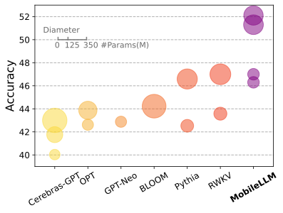
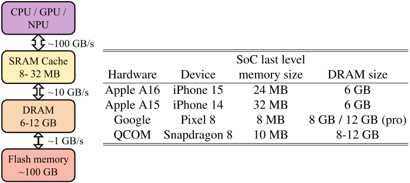
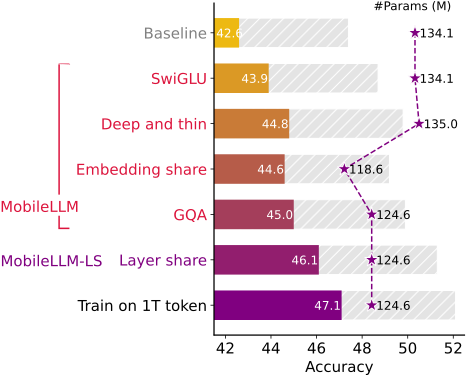
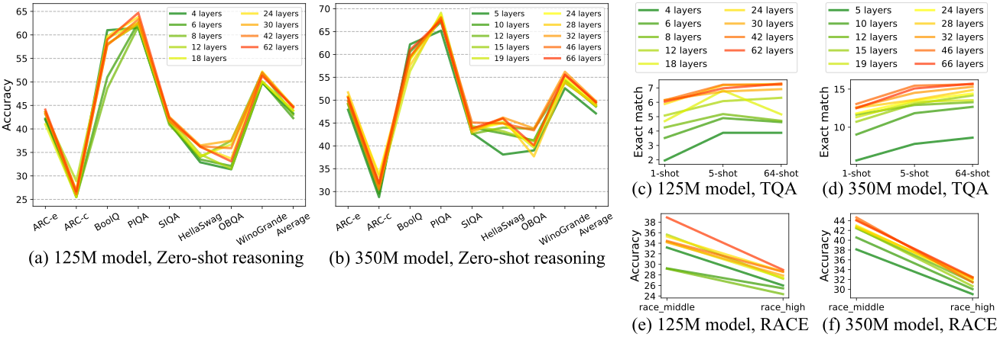
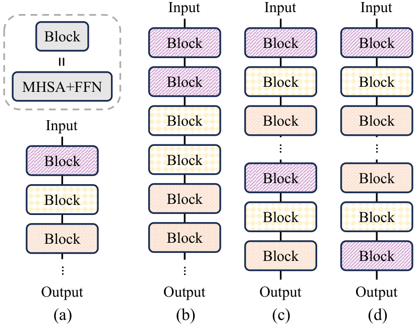
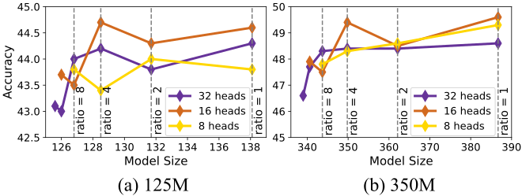
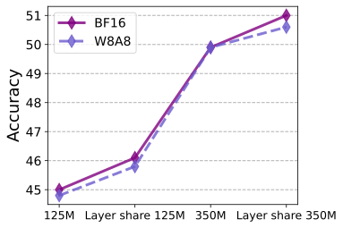

This page teaches the MobileLLM paper (ICML 2024) by pairing every design decision with the exact code that implements it. Left: what the paper says. Right: what the repo does. Bottom: the link between the two.
The paper starts from a constraint: a phone's DRAM is small. The model must fit.

Figure 1. Average zero-shot common-sense score for LLMs under 1B parameters. Bubble area = model size. MobileLLM-125M/350M sit far ahead of previous sub-1B models (abstract: +2.7% / +4.3%).

Figure 2. Memory hierarchy of a phone: Flash is large but slow; DRAM is fast but limited to a few GB. Weights and the KV cache must live in DRAM.
Nothing on-device runs here: the repo trains the models. Its size is the point — the entire implementation of a trainable LLM family that fits on a phone is five Python files (see the tree above).
{
"vocab_size": 32000,
"hidden_size": 576,
"num_hidden_layers": 30,
...
"torch_dtype": "float16"
}
// 125M params ≈ 250 MB in FP16 —
// a fraction of phone DRAM
The figure-to-code link here is the whole design goal: Figure 2 is the problem, and every file in this repo is part of the answer.
For the same parameter budget, a tall narrow model beats a short wide one.

Figure 3. The 125M model starts as a 12-layer, 768-dim transformer and grows through FFN upgrades, depth changes and weight sharing (caption). Each bar is one design decision.

Figure 4. At equal size, deeper-and-thinner wins on reasoning, QA and reading comprehension.
The final 125M is 30 layers of 576 dims (the paper's Fig 3 endpoint) — 2.5× deeper than the 12-layer starting point, at a narrower width:
{
"num_hidden_layers": 30,
"hidden_size": 576,
"intermediate_size": 1536,
"hidden_act": "silu",
...
}
And the SwiGLU feed-forward network (§2.2.1, +1.3 points at 125M) is the gate/up/down triple in the MLP class:
LlamaMLP, L199class LlamaMLP(nn.Module): def __init__(self, config): self.gate_proj = nn.Linear(hidden, intermediate) self.up_proj = nn.Linear(hidden, intermediate) self.down_proj = nn.Linear(intermediate, hidden) self.act_fn = ACT2FN[config.hidden_act] # "silu"
num_hidden_layers: 30 plus
hidden_size: 576 in the config; the SwiGLU choice is the two projection matrices in LlamaMLP.The input embedding table doubles as the output projection. Fewer weights, better accuracy at this scale.
Table 1 ablates input/output embedding sharing on a 30-layer, 512-dim model: sharing the embedding with the language-model head raises zero-shot common-sense accuracy, so the released models turn it on.
The saving is real: a 576-dim × 32,000-vocab head alone is ~18M params — 15% of a 125M model. Sharing deletes it.
Two branches, one flag:
LlamaForCausalLM.__init__, L1130def __init__(self, config): super().__init__(config) self.model = LlamaModel(config) if not getattr(self.config, "share_embedding", False): self.lm_head = nn.Linear(config.hidden_size, config.vocab_size)
LlamaForCausalLM.forward, L1229if not getattr(self.config, "share_embedding", False): logits = self.lm_head(hidden_states) else: logits = F.linear(hidden_states, self.model.embed_tokens.weight)
The flag travels: pretrain.sh (--share_embedding True) →
process_args.py:26 →
pretrain.py:167 → the model.
else branch at L1232:
the logits come from the input embedding matrix itself, no separate lm_head exists.The paper's signature trick — MobileLLM-LS — is four lines in a Python loop.

Figure 6. Four strategies: (a) none, (b) immediate block-wise, (c) repeat-all-over, (d) reverse. Table 2: (b) wins at 350M (50.2 avg) and leads by 0.2 at 125M (45.0 vs 45.2); the paper adopts (b). The abstract: "no increase in model size and only marginal latency overhead".
Table 7 — the proof, measured on an iPhone 13 (ExecuTorch, FP16, §3.6):
| Load | Init | Execute | |
|---|---|---|---|
| MobileLLM (30 layers) | 39.2 ms | 1361.7 ms | 15.6 ms |
| MobileLLM-LS (2×30, shared) | 43.6 ms | 1388.2 ms | 16.0 ms |
| 60-layer, no sharing | 68.6 ms | 3347.7 ms | 29.0 ms |
Shared doubling costs +2.2% load / +2.6% execute. Real doubling costs +143% / +86%. That gap is the whole contribution.
Strategy (b) — run each layer, then run that same layer again — is inside the decoder loop:
LlamaModel, L888self.layer_sharing = config.layer_sharing
LlamaModel.forward, L958–L1015for decoder_layer in self.layers: layer_outputs = decoder_layer(hidden_states, ...) hidden_states = layer_outputs[0] # Repeat current layer if layer_sharing is enabled if self.layer_sharing: layer_outputs = decoder_layer(hidden_states, ...) hidden_states = layer_outputs[0]
30 stored layers, 60 passes through them. The model's effective
depth doubles while its parameter count does not.
eval.sh runs the baseline with --layer_sharing False;
the default in process_args.py is True.
if self.layer_sharing block;
Table 7's numbers are what that block is worth on a real phone.
"MobileLLM-LS-125M (2×30 layers)" in Table 7 = 30 layers of weights, run twice, exactly as the loop does.The KV cache is what eats phone DRAM during generation. Sharing KV heads shrinks it.

Figure 5. Ablation on heads vs KV-heads; the ratio is heads ÷ KV-heads. §2.2.4: reducing KV heads from 16 to 4 (4:1) keeps accuracy at 125M (−0.2 pts at 350M), and adopting GQA adds +0.4 points. The released 125M uses 9 query heads and 3 KV heads (3:1).
Attention reads two different head counts from the config and expands K/V on the fly:
LlamaAttention.__init__, L255self.num_heads = config.num_attention_heads # 9 self.num_key_value_heads = config.num_key_value_heads # 3 self.num_key_value_groups = self.num_heads // self.num_key_value_heads # 3
repeat_kv, L227def repeat_kv(hidden_states, n_rep): # (batch, 3 kv heads, seq, dim) → (batch, 9, seq, dim) hidden_states = hidden_states[:, :, None].expand(..., n_rep, ...) return hidden_states.reshape(batch, 3*n_rep, ...)
Only 3 KV heads are stored in the cache; they are re-used for all
9 query groups. For 125M: num_attention_heads: 9,
num_key_value_heads: 3 in the config.
repeat_kv is the mechanism that makes one KV head serve three query heads.Everything in the paper's tables was trained and evaluated with the files in this repo.
§2.1: 32 A100 GPUs, batch size 32 per GPU. The final models train 480k iterations on 1T tokens. Eval: eight zero-shot reasoning tasks, TQA, RACE.
§3.6: latency measured on iPhone 13 (iOS 17.2.1) with ExecuTorch and the Metal backend, averaged over 50 iterations.
Honesty note: the repo trains on the A100 cluster and measures perplexity. The iPhone numbers in Table 7 come from the paper's ExecuTorch harness, which is not in this repo.
The exact launch command from the repo, matched against §2.1:
torchrun --nnodes=1 --nproc_per_node=8 pretrain.py \ --input_model_filename "./configs/125M/" \ --max_steps 480000 # = §2.1 "480k iterations" --per_device_train_batch_size 32 --share_embedding True # = Table 1's winning row --lr_scheduler_type cosine # 4 nodes × 8 GPUs = 32 A100s = §2.1
for i in range(nsamples): loss = loss_fct(shift_logits.view(-1, V), shift_labels) nlls.append(loss * model.seqlen) ppl = torch.exp(sum(nlls) / (nsamples * model.seqlen))
Data streaming lives in pretrain.py:
JSONLIterator reads sharded .jsonl files, one shard per GPU
(world_size 8 per node).
pretrain.sh is §2.1 as a shell script:
480k steps, batch 32, 8 GPUs per node, sharing on. The paper's numbers and the repo's
flags describe the same run.Two results have no matching code. A good walkthrough says so.

Figure 7 / §3.4: W8A8 post-training quantization keeps most of the accuracy (the sub-1B design is "quantization-friendly").
§3.5: knowledge distillation from a LLaMA-v2 7B teacher (soft labels) lifts the small models further.
No quantization code 0 matches
Quantization is applied externally (e.g. ExecuTorch / Hugging Face tooling) to the
exported checkpoint. The design choices that help — no bias terms, shared embeddings,
SwiGLU — are in the model code shown above.
No distillation code 0 matches
A grep for distill, teacher, soft label across
the repo returns nothing. The distillation runs are not open-sourced.